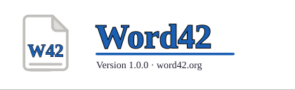
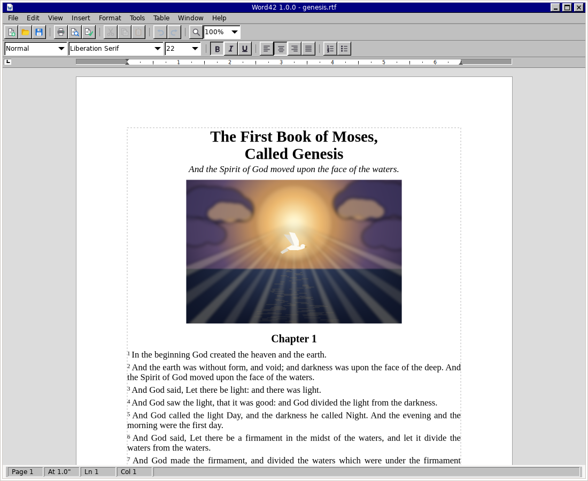

Written from scratch in C on GTK 4, Pango and Cairo: a menu bar, two toolbars, a ruler, a status bar and a page. Inspired by classic Microsoft Word and AbiWord, on a modern text stack that handles Unicode, OpenType and complex scripts properly.

Word42 in Page Layout view.
.odt.docx and .doc.abwThe user guide describes every command in the program; the status page and architecture notes tell the rest.
An unsigned Word42.app from the
releases page.
First launch is a right-click ▸ Open.
Build from source with Meson —
docs/BUILD.md
has the details; a Flatpak manifest is in
build-aux/.